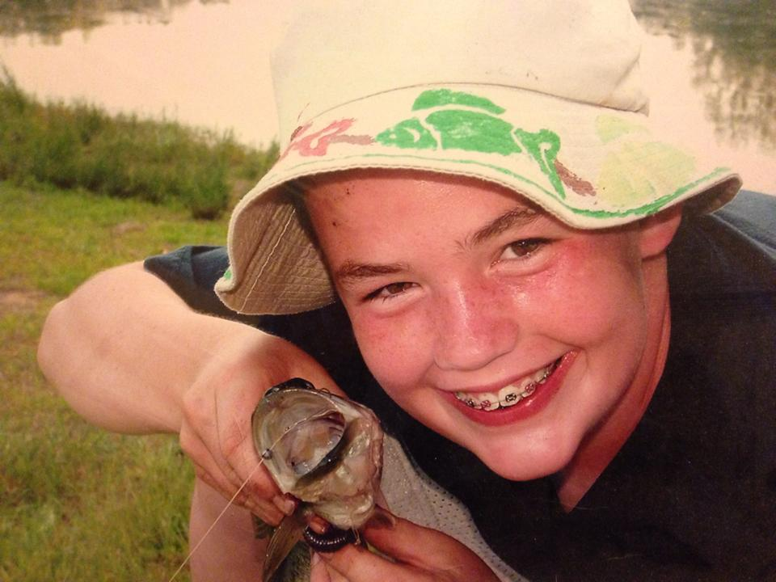
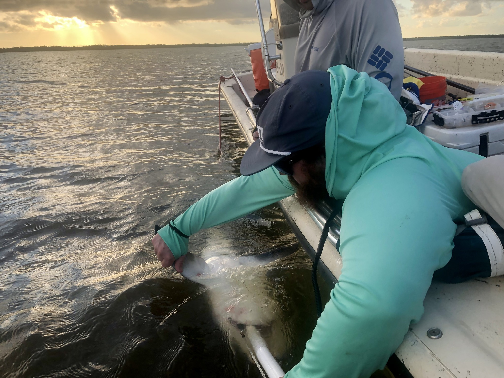

Research Statement
My name is Mack White (he/him) and I am an ecologist interested in the drivers of ecosystems across various scales (from individuals to ecosystems). My research currently revolves around further understanding the contextual roles of consumers in the cycling of nutrients and flow of energy within and across ecosystems. By combining field, experimental, and modeling techniques, I aim to bridge theories across different ecological disciplines to provide novel insights. The goal of my research is to provide a more holistic understanding of the natural world that informs conservation and management efforts.
Skills & Interests
Ecology – Coding – Teaching – Camping – Hiking – Sports
Scientific Background
 My interest in the natural world started early and at the end of a fishing line. Growing up in West Virginia, my mom felt it was important we spent time together enjoying our state’s natural wonders. Though she was not particularly “outdoorsy,” she made it a point to take at least a few camping trips to the mountains every summer. It was during these trips that I became enamored by the water. It seemed as if an entirely different world, one I could only temporarily observe, lay below the water’s surface. There was something exciting about the uninhabitable. I quickly found fishing was a way to interact with this other world. Every time I caught a fish, I felt a little more connected to the water. The excitement only grew as I got older, and I found myself wanting to learn more about life below the water line.
 This led me to Marshall University (Go Herd) to pursue my B.S. in Environmental Science. It was during my undergrad that I was offered my first opportunity in “the field”. I spent the summer of 2017 doing stream restoration work with Trout Unlimited and the United States Forest Service in the Monongahela National Forest. I was able to see first hand how much damage had been done to native Brook Trout streams as a result of unregulated logging practices in the state, as well as how much hard work it took to try and restore them. It was a very fulfilling opportunity that propelled me into my final semester at Marshall, eager to see and learn more.
This led me to Marshall University (Go Herd) to pursue my B.S. in Environmental Science. It was during my undergrad that I was offered my first opportunity in “the field”. I spent the summer of 2017 doing stream restoration work with Trout Unlimited and the United States Forest Service in the Monongahela National Forest. I was able to see first hand how much damage had been done to native Brook Trout streams as a result of unregulated logging practices in the state, as well as how much hard work it took to try and restore them. It was a very fulfilling opportunity that propelled me into my final semester at Marshall, eager to see and learn more.
 Soon after graduating from Marshall in December 2017, I accepted a position as a contractual biologist for the Ohio River Valley Water Sanitation Commission (ORSANCO). I spent the next eight months traveling throughout the Ohio River basin, surveying fish communities at locations contracted to ORSANCO under the US-EPA National River and Streams Assessment (NRSA). This work provided me the opportunity to sample fish communities throughout the Ohio River basin in a variety of systems (headwater streams in southern New York to the main stem of the Ohio River in Illinois) using a number of different techniques. In addition to providing great field experience, this work incited further curiosity and a burning desire to ask my own research questions.
Soon after graduating from Marshall in December 2017, I accepted a position as a contractual biologist for the Ohio River Valley Water Sanitation Commission (ORSANCO). I spent the next eight months traveling throughout the Ohio River basin, surveying fish communities at locations contracted to ORSANCO under the US-EPA National River and Streams Assessment (NRSA). This work provided me the opportunity to sample fish communities throughout the Ohio River basin in a variety of systems (headwater streams in southern New York to the main stem of the Ohio River in Illinois) using a number of different techniques. In addition to providing great field experience, this work incited further curiosity and a burning desire to ask my own research questions.
 I accepted an M.S. position with Dr. Kit Wheeler at Tennessee Tech University (TTU) in the Stream Fish Ecology lab to further my ability to develop hypothesis-driven questions and refine my research interests in January 2019. My thesis research quantified the amount of nitrogen and phosphorus delivered by sucker fish via excretion, eggs, and carcasses during their annual spawning migrations. My time at TTU was extremely rewarding. My advisor was hugely supportive and fostered an environment in which I was able to pursue my own research questions related to my thesis. I also discovered my love for teaching, as I taught biology and ecology courses for five semesters. Conveying my passion for science to excited students was very fulfilling and solidified my desire to pursue a career in academia with research and teaching duties.
I accepted an M.S. position with Dr. Kit Wheeler at Tennessee Tech University (TTU) in the Stream Fish Ecology lab to further my ability to develop hypothesis-driven questions and refine my research interests in January 2019. My thesis research quantified the amount of nitrogen and phosphorus delivered by sucker fish via excretion, eggs, and carcasses during their annual spawning migrations. My time at TTU was extremely rewarding. My advisor was hugely supportive and fostered an environment in which I was able to pursue my own research questions related to my thesis. I also discovered my love for teaching, as I taught biology and ecology courses for five semesters. Conveying my passion for science to excited students was very fulfilling and solidified my desire to pursue a career in academia with research and teaching duties.
I accepted a Ph.D. position with Dr. Jennifer Rehage in the Coastal Fish Ecology & Fisheries lab at FIU to continue developing my abilities as a research scientist in August 2021. Across the last few years, I have spent the majority of my time working in Everglades National Park (ENP). I am currently leading two projects related to my dissertation research: (I) The South Florida Coastal Everglades Array (SRFCEA), which has been monitoring the movements of several ecologically and economically important fishes (i.e., Common Snook, Largemouth Bass, Bull Shark) using passive acoustic telemetry in the Shark River, ENP since 2011 and (II) the United States Army Corp of Engineer RECOVER Monitoring and Assessment Program (USACE RECOVER-MAP) which has been monitoring fish community composition at the marsh-mangrove interface in the Shark River, ENP since 2004. These projects, plus our food web monitoring program (2019-present) that I work closely with, are associated with the Florida Coastal Everglades Long-Term Research (FCE-LTER) program. My dissertation research uses aspects of each of these projects to investigate the drivers of consumer-mediated nutrient dynamics (CND) across scales of ecological organization (individual-, population-, and community-) in the Shark River, ENP. focused I am fortunate to be the principal investigator of a synthesis working group funded by the National Science Foundation’s Long Term Ecological Research Network which aims to characterize spatiotemporal patterns in CND under the wake of global change across long-term research programs globally. Our working group is 20 members strong with representation across career stages and ecosystems (pelagic zooplankton communities in the Gulf of Alaska to coral reef fish communities in French Polynesia). You can learn more about the ongoing synthesis efforts here.